Readable export of my Spring 2024 assignment. The text and embedded outputs are retained from the original submission. The portfolio overview provides a concise explanation of the methods and skills.
Homework 1: Measurement & Evaluation of HCC Systems (HCC 6400)
Raphael Maris Ugboko
February 20, 2024.
Question 1. Describing data
Input:
round(stat.desc(tw$rating, basic = F, norm = T), digits = 3)
The Mean of the rating by the participants is 3.267, and the Standard Deviation is 0.730.
Input:
mean <- 3.267
Std <- 0.730
SE <- Std/sqrt(267)
upper <- mean + 1.96*SE
lower <- mean - 1.96*SE
show(upper)
show(lower)
The lower confidence level is 3.180, while the upper confidence level is 3.355.
The confidence has an interval with a lower bound of 3.180 and an upper bound of 3.355. This interval indicates that, on repetition, the true mean of participant rating will lie within 3.18 and 3.355, 95% of the time.
Question 2. Correlation between rating and perceived quality
We’re testing if the quality of recommendations is correlated with the rating by the participants, therefore we are testing for Convergent Validity.
Input:
ggplot(tw,aes(rating)) + geom_histogram(aes(y = ..density..),
color="black", fill="white") + stat_function(fun = dnorm, args=list(mean = mean(tw$rating),
sd = sd(tw$rating)))
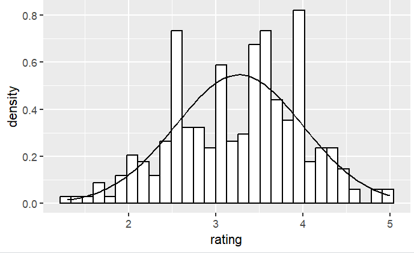
Saved figure or output 1 · original Homework 1 submission. Select the image to inspect it at full size.Input:
round(stat.desc(tw$rating, basic = F, norm = T), digits = 3)
shapiro.test(tw$rating)
The rating by the participants, W = 0.985, p-value = 0.00799, is significantly non-normal, with a skewness value of -0.237 and a kurtosis value of -0.476.
The values of skew and kurtosis should be zero in a normal distribution. However, the further the value is from zero, the more likely it is that the data are not normally distributed. Since we have a skewness value of -0.237 (which indicates a buildup of high scores) and a kurtosis value of -0.476 (which indicates a flat and light-tailed distribution), these values are somewhat close to zero, they are not a cause for concern. The values for skewness and kurtosis between -2 and +2 are considered acceptable in order to prove normal univariate distribution (George & Mallery, 2010). Hair et al. (2010) and Bryne (2010) argued that data is considered to be normal if skewness is between ‐2 to +2 and kurtosis is between ‐7 to +7.
Input:
ggplot(tw,aes(quality)) + geom_histogram(aes(y = ..density..),
color="black", fill="white") + stat_function(fun = dnorm, args=list(mean = mean(tw$quality),
sd = sd(tw$quality)))
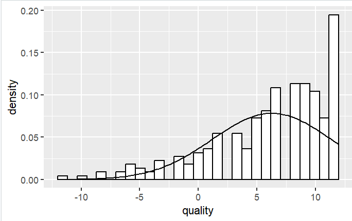
Saved figure or output 2 · original Homework 1 submission. Select the image to inspect it at full size.round(stat.desc(tw$quality, basic = F, norm = T), digits = 3)
shapiro.test(tw$quality)
The quality of recommendations, W = 0.90232, p-value = 3.834e-12, is significantly non-normal, with a skewness value of -1.034 and a kurtosis value of 0.619.
As mentioned earlier, the values of skew and kurtosis should be zero in a normal distribution, and the further the value is from zero, the more likely it is that the data are not normally distributed. The skewness value of -1.034 is quite far from zero, and the kurtosis value of 0.69 is also somewhat far from zero, so they are a cause for concern.
Input:
ggplot(tw, aes(quality, rating)) + geom_point() + geom_smooth(method = "lm", se = FALSE)
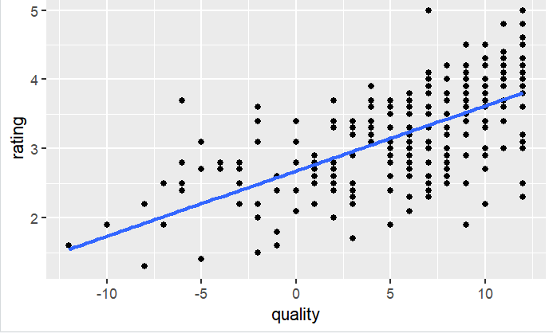
Saved figure or output 3 · original Homework 1 submission. Select the image to inspect it at full size.Input:
cor.test(tw$quality, tw$rating, method = "spearman")
I used Spearman’s method because of the robustness against outliers, as our distribution is non-normal, and has skewness and kurtosis. The quality of recommendations was significantly correlated to the participants’ rating with r = 0.670, p-value < 2.2e-16. The coefficient of 0.670 indicates an almost perfect positive relationship (A coefficient of +1 indicates a perfect positive relationship) between quality and rating. It is greater than ±.5, so it has a large effect. The p-value is then 0.05, so we can reject the null hypothesis.
Input:
cor(tw$quality, tw$rating, method = "spearman")2 * 100
There is a significant, moderately positive correlation between the quality of recommendations and the rating by the participants. 44.89% of the variation in the quality of recommendations is accounted for by participants’ ratings. This leaves 55.11% of the variability still to be accounted for by other variables.
Question 3. Regression of satisfaction
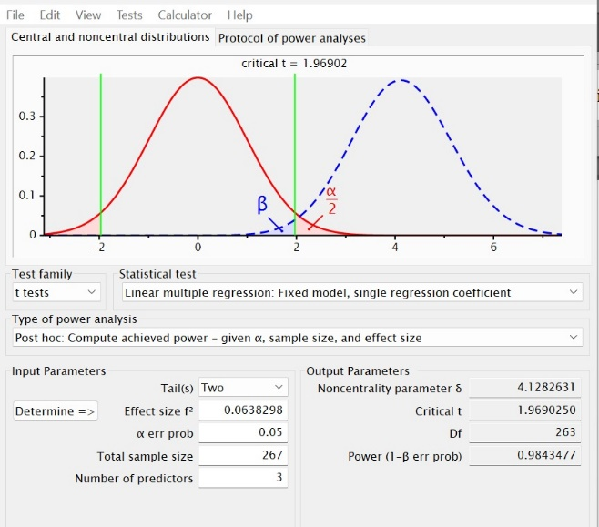
Saved figure or output 4 · original Homework 1 submission. Select the image to inspect it at full size.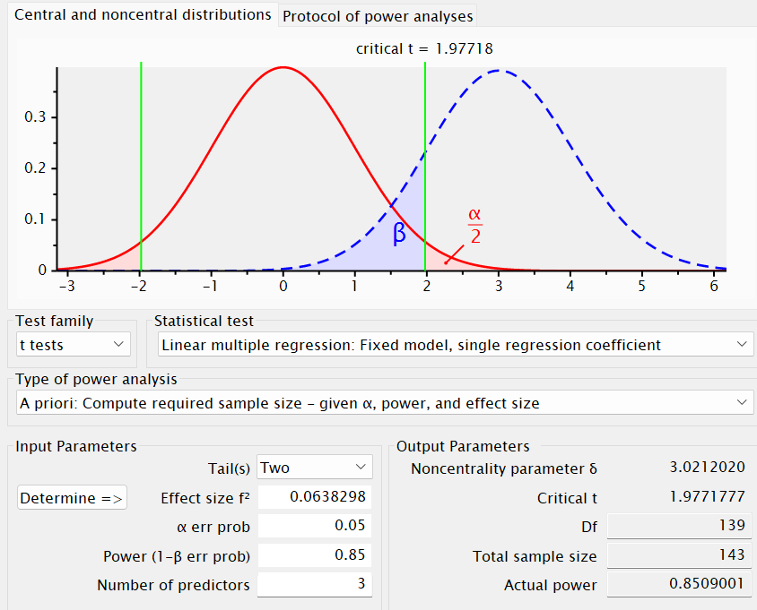
Saved figure or output 5 · original Homework 1 submission. Select the image to inspect it at full size.143 participants.
Input:
model1 <- lm(satisfaction ~ quality, data = tw)
summary(model1)
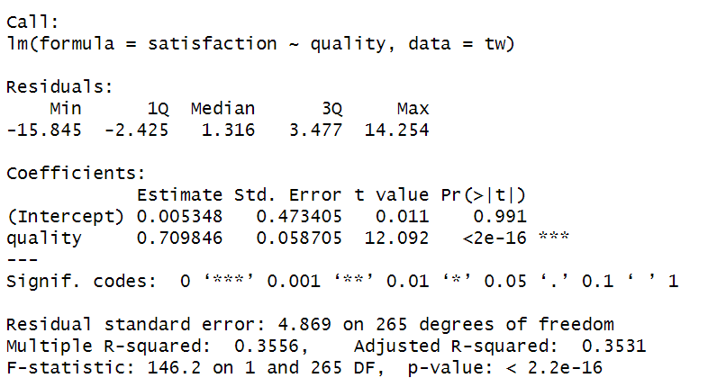
Saved figure or output 6 · original Homework 1 submission. Select the image to inspect it at full size.Overall fit of the object model
The Pearson correlation coefficient is r = 0.596, p-value: < 2.2e-16. Also, The quality of recommendations accounts for 35.56% of the variation in participants’ overall satisfaction with the TasteWeights system. The result F-statistic: 146.2 on 1 and 265 DF, p-value: < 2.2e-16 which is significant at p < .001 tells us that the model is significantly correlated and there is less than a 0.1% chance that an F-ratio this large would happen if the null hypothesis were true. Therefore, we can conclude that our regression model results in significantly better prediction of satisfaction of participants than if we used the mean value of participants' satisfaction. Overall, our model is a good predictor of participants’ overall satisfaction with the TasteWeights system.
Model parameters
When the quality of recommendations is really terrible or zero (when X = 0), our model predicts a participant satisfaction of 0.00535. Therefore, if we increase quality of recommendations by 1 unit, then our model predicts that there will be an increase in overall satisfaction of participants by 0.7098. Therefore, if we want to predict satisfaction of participants, we can use the formula:
satisfactioni = b0 + (b1 * quality of recommendationsi)
= 0.00535 + (0.709 x quality of recommendations)
No, we cannot; just because two variables are correlated, doesn’t mean that one causes the other. While these variables are significantly correlated, we would need to perform experimental studies to establish causation.
Input:
model2 <- lm(satisfaction ~ quality + perceived_control + understandability, data = tw)
summary(model2)
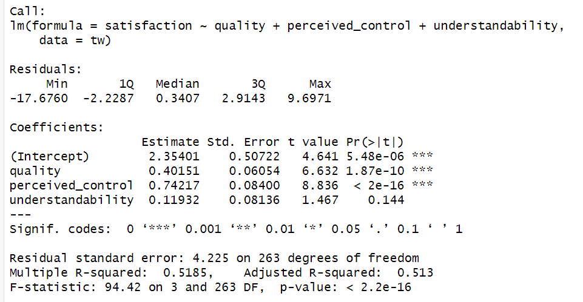
Saved figure or output 7 · original Homework 1 submission. Select the image to inspect it at full size.Overall fit of the object model
In our previous model, the quality of recommendations accounted for 35.56% of the variation in participants’ overall satisfaction with the TasteWeights system. R2 increased from 0.3556 to 0.5185. Our new model indicates that perceived control and understandability account for an additional 16.29% of variance in satisfaction. The difference between R-squared and adjusted R-squared is 0.0055 (about 0.5%). This means that if the model were derived from the population rather than a sample it would account for approximately 0.5% less variance in the outcome. The F-statistic is 94.42 with a p-value < 2.2e-16, indicating that the model is significantly correlated.
Model parameters
satisfactioni = b0 + (b1 * quality of recommendationsi) + (b2 * perceived controli) + (b3 * understandabilityi)
= 2.354 + (0.402 * quality of recommendationsi) + (0.742 * perceived controli) + (0.119 * understandabilityi)
There is a positive correlation between satisfaction and the other predictor variables, due to the positive values obtained.
Quality of recommendations (b = 0.402): This value indicates that as the quality of recommendations increases by 1 unit, the participants’ satisfaction increases by 0.402. This is true only if perceived control and understandability are held constant.
t(263) = 6.632, p = 1.87e-10. T value is high and p-value is less than 0.05 which indicates that the quality of recommendations makes a significant contribution to the model and is a significant predictor of participants’ satisfaction.
Perceived control (b = 0.742): This value indicates that as the perceived control increases by 1 unit, the participants’ satisfaction increases by 0.742. This is true only if quality of recommendations and understandability are held constant.
t(263) = 8.836, p < 2e-16. T value is high and p-value is less than 0.05 which indicates that perceived control makes a significant contribution to the model and is a significant predictor of participants’ satisfaction.
Understandability (b = 0.119): This value indicates that as the understandability increases by 1 unit, the participants’ satisfaction increases by 0.119. This is true only if quality of recommendations and perceived control are held constant.
t(263) = 1.467, p = 0.144. t value is low and p-value is greater than 0.05 which indicates that perceived control makes a non-significant contribution to the model.
Input:
anova(model1, model2)
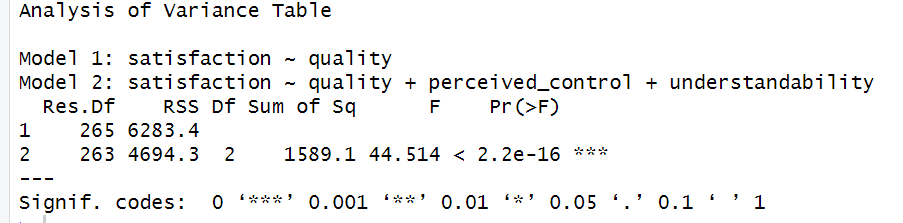
Saved figure or output 8 · original Homework 1 submission. Select the image to inspect it at full size.Model 2 significantly improved the fit of the model compared to Model 1, F(2, 263) = 44.514, p < .001
Input:
rcorr(as.matrix(tw[,c("satisfaction","perceived_control","understandability","rating","known","time")]))
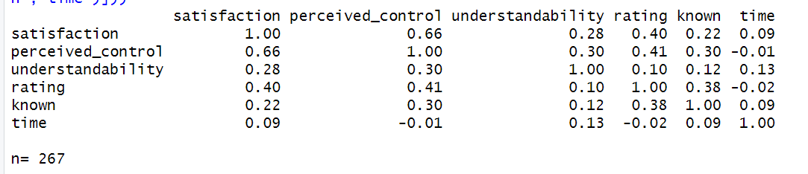
Saved figure or output 9 · original Homework 1 submission. Select the image to inspect it at full size.In selecting my variables, I checked for variables that are correlated with Y but not X (increases precision) and variables that are correlated with both X and Y.
None of the variables fall into the category: "correlated with Y but not X" as all variables have some level of correlation with satisfaction. All variables fall into the category "correlated with both X and Y", however, some variables have a stronger correlation. perceived control (0.66), rating (0.40), known (0.22), understandability (0.28), time (0.09). So, I would include the other variables except time.
Input:
model3 <- lm(satisfaction ~ quality + perceived_control + understandability + rating + known, data = tw)
summary(model3)
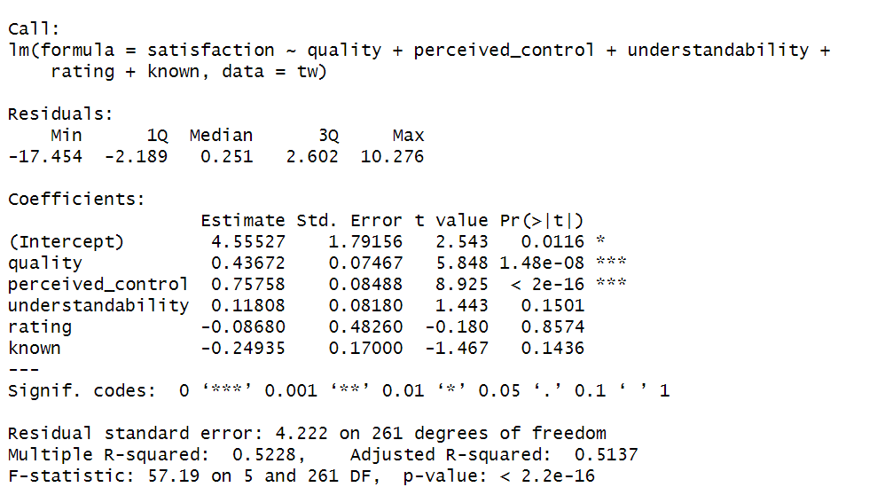
Saved figure or output 10 · original Homework 1 submission. Select the image to inspect it at full size.Model summary
In our first model, the quality of recommendations accounted for 35.56% of the variation in participants’ overall satisfaction with the TasteWeights system. In the second model, perceived control and understandability accounted for an additional 16.29% of variance in satisfaction. In the third model, R2 increased from 0.5185 to 0.5228. This indicates that rating and known account for an additional 0.43% in participants' satisfaction. The F-statistic is 57.19 with a p-value < 2.2e-16, indicating that the model is significantly correlated.
Model parameters
satisfactioni = b0 + (b1 * quality of recommendationsi) + (b2 * perceived controli) + (b3 * understandabilityi) + (b4 * ratingi) + (b5 * knowni)
= 4.555 + (0.437 * quality of recommendationsi) + (0.758 * perceived controli) + (0.118 * understandabilityi) + (-0.087 * ratingi) + (-0.250 * knowni)
There is a positive correlation between satisfaction and quality, perceived control, and understandability. However, there is a negative correlation between satisfaction and rating and known.
Quality of recommendations (b = 0.437): This value indicates that as the quality of recommendations increases by 1 unit, the participants’ satisfaction increases by 0.437. This is true only if perceived control, understandability, rating and known are held constant.
t(261) = 5.848, p = 1.48e-08. T value is high, and p-value is less than 0.05 which indicates that the quality of recommendations makes a significant contribution to the model and is a significant predictor of participants’ satisfaction.
Perceived control (b = 0.758): This value indicates that as the perceived control increases by 1 unit, the participants’ satisfaction increases by 0.758. This is true only if quality of recommendations, understandability, rating and known are held constant.
t(261) = 8.925, p < 2e-16. T value is high, and p-value is less than 0.05 which indicates that perceived control makes a significant contribution to the model and is a significant predictor of participants’ satisfaction.
Understandability (b = 0.118): This value indicates that as the understandability increases by 1 unit, the participants’ satisfaction increases by 0.118. This is true only if quality of recommendations, perceived control, rating and known are held constant.
t(261) = 1.443, p = 0.1501. T value is low, and p-value is greater than 0.05 which indicates that the understandability makes a non-significant contribution to the model and is not a significant predictor of participants’ satisfaction.
Rating (b = -0.087): This value indicates that as the rating increases by 1 unit, the participants’ satisfaction increases by -0.087. This is true only if quality of recommendations, perceived control, understandability and known are held constant.
t(261) = -0.180, p = 0.8574. T value is low, and p-value is greater than 0.05 which indicates that the rating makes a non-significant contribution to the model and is not a significant predictor of participants’ satisfaction.
Known (b = -0.249): This value indicates that as the rating increases by 1 unit, the participants’ satisfaction increases by - 0.249. This is true only if quality of recommendations, perceived control, understandability and rating are held constant.
t(261) = -1.467, p = 0 .1436. T value is low, and p-value is greater than 0.05 which indicates that the rating makes a non-significant contribution to the model and is not a significant predictor of participants’ satisfaction.
Input:
anova(model3, model2)
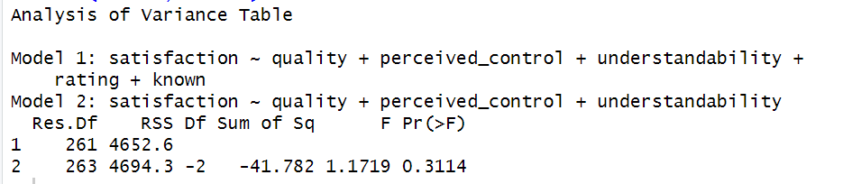
Saved figure or output 11 · original Homework 1 submission. Select the image to inspect it at full size.Model 3 did not significantly improve the fit of the model compared to Model 2, F(2, 263) = 1.172, p > .001
Correlation does not control for other variables, while regression controls for other variables. Also, correlation tests the strength of linear relationship between variables, while regression tests the effects of predictor variables on an outcome variable.
| ∆R2 | B | SE B | β | P |
Model 1 | 0.3556 | | | | |
Constant | | 0.00535 | 0.4734 | | 0.991 |
Quality | | 0.7099 | 0.0587 | 0.596 | <.001 |
Model 2 | 0.5185 | | | | |
Constant | | 2.354 | 0.507 | | <.001 |
Quality | | 0.402 | 0.0605 | 0.337 | <.001 |
Perceived Control | | 0.742 | 0.084 | 0.456 | <.001 |
Understandability | | 0.119 | 0.0814 | 0.0661 | 0.144 |
Model 3 | 0.5228 | | | | |
Constant | | 4.555 | 1.792 | | 0.0116 |
Quality | | 0.437 | 0.075 | 0.367 | <.001 |
Perceived Control | | 0.758 | 0.085 | 0.465 | <.001 |
Understandability | | 0.118 | 0.082 | 0.0654 | 0.1501 |
Rating | | -0.0868 | 0.483 | -0.0105 | 0.8574 |
Known | | -0.2494 | 0.17 | -0.0697 | 0.1436 |
The quality of recommendations and perceived control are the most significant predictors of satisfaction of participants. Including understandability, rating and known does not significantly improve the model.
Input:
ggplot(tw,aes(satisfaction)) + geom_histogram(aes(y = ..density..),
color="black", fill="white") + stat_function(fun = dnorm, args=list(mean = mean(tw$satisfaction),
sd = sd(tw$satisfaction)))
round(stat.desc(tw$satisfaction, basic = F, norm = T), digits = 3)
shapiro.test(tw$satisfaction)
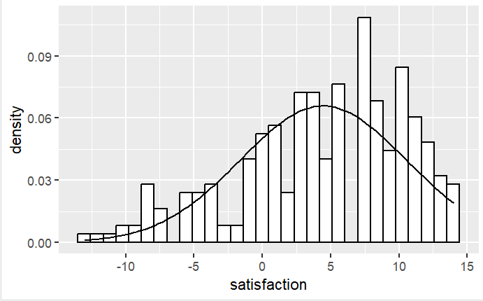
Saved figure or output 12 · original Homework 1 submission. Select the image to inspect it at full size.The satisfaction of the participants’ with the TasteWeights system, W = 0.953, p-value = 1.336e-07, is significantly non-normal, with a skewness value of -0.651 and a kurtosis value of -0.240.
No, we shouldn’t. We already tested for normality earlier in the model, and these other variables are not significant to the model, so there’s no need to test them for normality.
Input:
tw$rstand <- rstandard(model2)
tw$rstand.large <- (tw$rstand > 1.96 | tw$rstand < -1.96)
tw[tw$rstand.large,c("quality", "perceived_control", "understandability","rstand")]
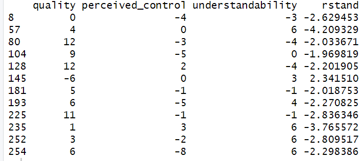
Saved figure or output 13 · original Homework 1 submission. Select the image to inspect it at full size.1.96 is the 5% cutoff, and all the data points except rstand(104) are >1.96 or < -1.96. So, we check against 1% cutoff of 2.58 and clear outliers of 3.29.
Data points rstand(8) = -2.63, rstand(225) = -2.84 and rstand(252) = -2.81 are >2.58 or < -2.58.
Data points rstand(57) =-4.21 , and rstand(235) = -3.77, are greater >3.29 or < -3.29.
The data points that may be of concern, are those that significantly deviate from model predictions, namely rstand(57) =-4.21 , and rstand(235) = -3.77.
Input:
tw$cook <-cooks.distance(model2)
tw$leverage <- hatvalues(model2)
tw$covratio <- covratio(model2)
tw[tw$rstand.large,c("cook", "leverage", "covratio")]
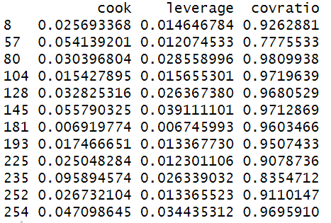
Saved figure or output 14 · original Homework 1 submission. Select the image to inspect it at full size.Cook's distance
Cook's distance >1 is a cause for concern, and there are no data points with values > 1 so that's a good thing.
Hat value
Average Influence (leverage) should be zero. However, every data point will have some influence calculated by (k+1)/n where k is the number of predictors and n is the number of data points in the model, which is (3+1)/267 which is .015. anything twice (.03) or thrice (.045) that value is a cause for concern. lev(145) = 0.039, and lev(254) = 0.035 are twice the cutoff value, but they are not thrice the value so they are not cause for concern.
Covariance ratio
Covariance ratio calculates how much the data point influenced the predictors, and should be < 1+(3(k+1)/n) which is 1.05 and > 1-(3(k+1)/n) which is .95, All our data points are less than 1.05, however, some are less than .95, namely cov(57) = .78, cov(225) = .91, cov(235) = .84 and cov(252) = .91. Their Cook's distance are < 1, so they are not cause for concern.
Input:
vif(model2)
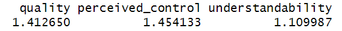
Saved figure or output 15 · original Homework 1 submission. Select the image to inspect it at full size.The variance inflation factor should be lower than 10 (or 5) and these values are well below 10 (and even 5) so they are not problematic.
Input:
plot(model2)
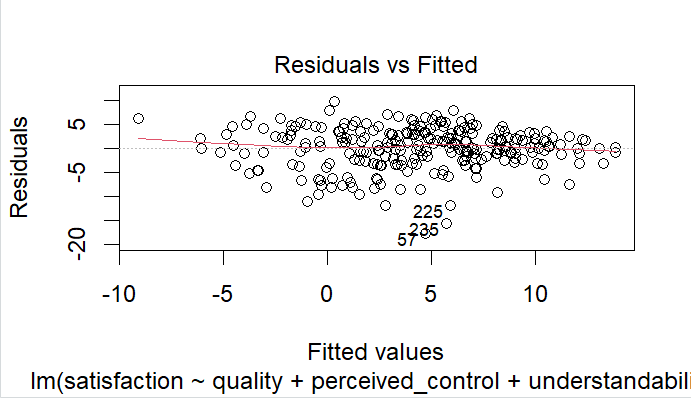
Saved figure or output 16 · original Homework 1 submission. Select the image to inspect it at full size.This plots the residuals by the estimated value of Y (fitted value). It looks random so this is good. It indicates absence of heteroscedasticity or non-linearity.
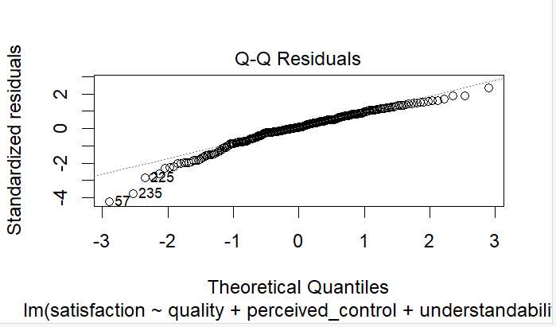
Saved figure or output 17 · original Homework 1 submission. Select the image to inspect it at full size.It is an almost straight line with some outliers.
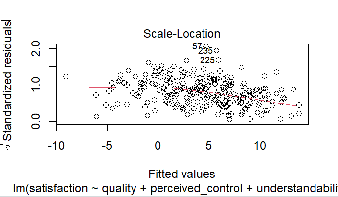
Saved figure or output 18 · original Homework 1 submission. Select the image to inspect it at full size.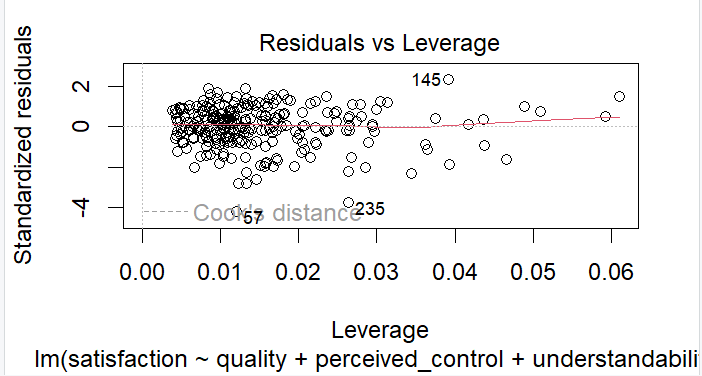
Saved figure or output 19 · original Homework 1 submission. Select the image to inspect it at full size.The residual plots are not problematic.
Input:
bootSatisfaction <- function(samples, i){
fit <-lm(satisfaction ~ quality + perceived_control + understandability, data=tw[i,])
return(coef(fit))
}
bootResults <- boot(tw, bootSatisfaction, 2000)
bootResults
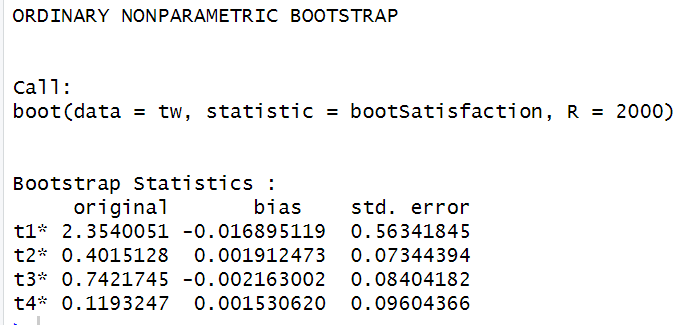
Saved figure or output 20 · original Homework 1 submission. Select the image to inspect it at full size.T1 to t4 corresponds to Satisfaction, quality, perceived control and understandability. We can compare the results of bootstrapping to the results of our model 2, as shown in the figure below.
Saved figure or output 21 · original Homework 1 submission. Select the image to inspect it at full size.We can notice that our results are similar for quality, perceived control and understandability, with just a tiny bit of bias across all variables. It informs us that we didn’t get different parameters because we are now taking non-normality into account.
Question 4. Regression of understandability
The experimental hypothesis H1 is that the inspectability manipulation has a significant effect on users' understandability such that the graph view increases users' understandability compared to the list view. As we believe that graph view increases users' understandability, thus we will check if the understandability in graph view is higher than understandability in the list view (hypothesis).
The null hypothesis H0 is that there is no significant effect of the inspectability manipulation on users' understandability. Thus, there is no difference in understandability between the graph view and the list view.
Input:
tw$inspectability <- factor(tw$inspectability)
levels(tw$inspectability)
graph_v_list <- c(1,0)
contrasts(tw$inspectability) <- cbind(graph_v_list)
Input:
dummyModel <- lm(understandability ~ inspectability, data=tw)
summary(dummyModel)
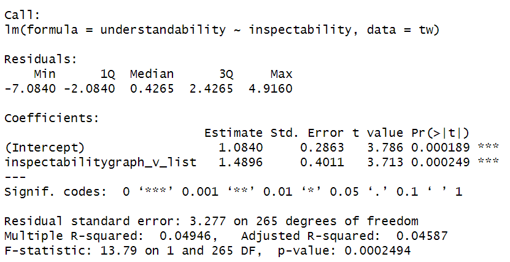
Saved figure or output 22 · original Homework 1 submission. Select the image to inspect it at full size.Overall fit of the object model
The multiple R-squared value is 0.04946, indicating that about 4.946% of the variance in understandability can be explained by inspectability. The F-statistic is 13.79 with p-value = .000249. This suggests that the model is statistically significant.
Model parameters
The mean change for list view is 1.084. The difference between graph view and list view is 1.49. This suggests that understandability is 1.49 times higher when inspectability is in graph view, than when it is in list view. The one-sided p-value for the effect of inspectability (graph view vs. list view) on understandability is p = 0.000249. This suggests that inspectability and understandability are significantly correlated.
No, we cannot; just because two variables are correlated, doesn’t mean that one causes the other. While these variables are significantly correlated, we would need to perform experimental studies to establish causation. In an experiment, where we carefully construct the manipulations, so that the effect of one experimental condition can easily be understood, we can make a causal statement
Input:
ggplot(tw,aes(inspectability, understandability))+geom_boxplot()
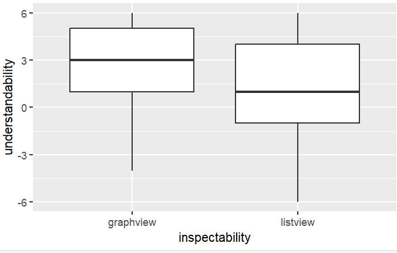
Saved figure or output 23 · original Homework 1 submission. Select the image to inspect it at full size.There isn't much difference in the width of both boxes which suggests that there isn't difference in variability of residuals between graph view and list view. There are also no outliers in both boxes. However, the tail length is different so we can’t be certain. We can test further with the Levene’s test.
Input:
leveneTest(tw$understandability,tw$inspectability)
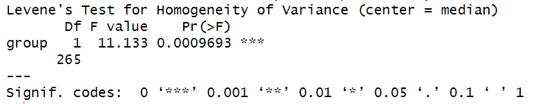
Saved figure or output 24 · original Homework 1 submission. Select the image to inspect it at full size.F(1,265) = 11.133, p = .00097. P < .05 which indicates heterogeneity i.e the variances are significantly different in different groups. We can test further with the variance ratio test.
Input:
var.test(dummyModel, model2)
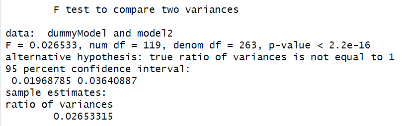
Saved figure or output 25 · original Homework 1 submission. Select the image to inspect it at full size.The relationship between inspectability and understandability with F=.0265, p-value < 2.2e-16 is statistically significant. The 95% confidence interval 0.0197, 0.0364 provides a range of possible values where the true ratio of variance lies.
Given our experimental hypothesis, we can conclude that there is evidence to support the experimental hypothesis, which suggests that that the inspectability manipulation has a significant effect on users' understandability.
Question 5. Regression of perceived control
Input:
tw$control <- factor(tw$control)
levels(tw$control)
item_v_none <- c(0,1, 0)
friend_v_none <- c(0, 0, 1)
contrasts(tw$control) <- cbind(item_v_none, friend_v_none)
Input:
controlModel <- lm(perceived_control ~ control, data=tw)
summary(controlModel)
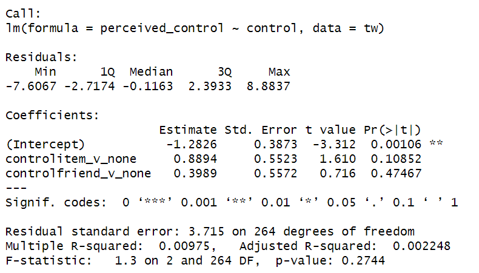
Saved figure or output 26 · original Homework 1 submission. Select the image to inspect it at full size.Overall fit of the object model
The multiple R-squared value is 0.00975, indicating that about .98% of the variance in perceived control can be explained by control. The F-statistic is 1.3 with p-value = .274. This suggests that the model is statistically non-significant.
Model parameters
The mean change for none is -1.283. The difference between none and item is 0.8894. This suggests that perceived control is 0.8894 times higher in items. The one-sided p-value for the effect of control on perceived control is p = 0.274. This suggests that control and perceived control are non-significantly correlated.
Family-wise error.
Contributorship Statement:
“I crosschecked the correctness of my values with Hansen Lee and Christopher Lawson”.